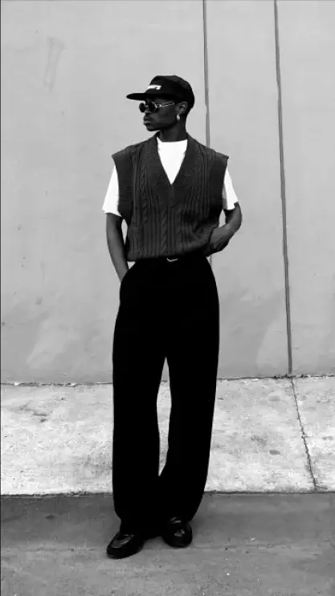
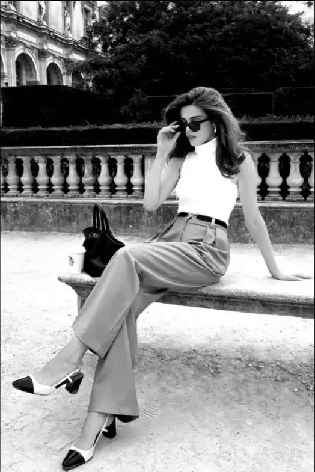
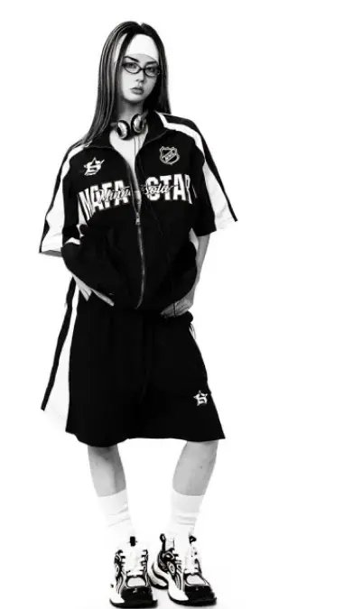
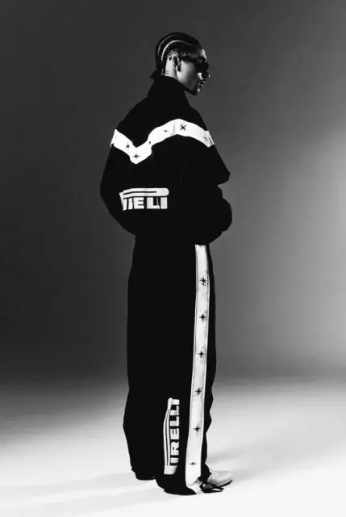
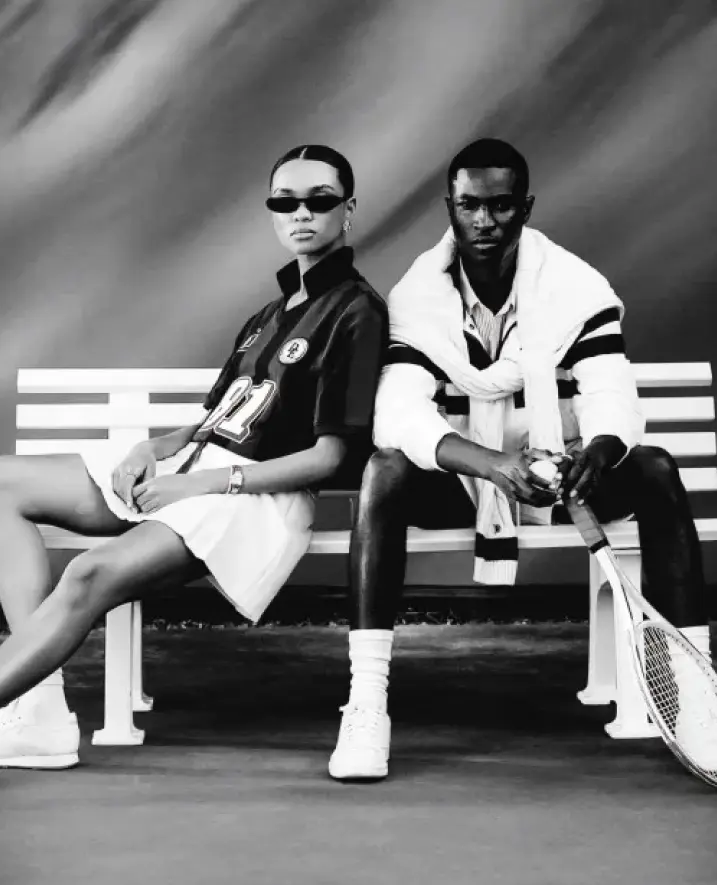

Tendances intemporelles
Les tendances reviennent parce que la mode réinterprète sans cesse les styles du passé.
Le Y2K séduit à nouveau avec son audace, l'Old Money avec son élégance discrète, et le Sportswear chic avec son confort moderne.
Ces trois styles montrent comment le passé continue d'influencer la mode actuelle.
Le retour des années 2000 (Y2K)
L’Old Money Style



Le Sportswear chic


